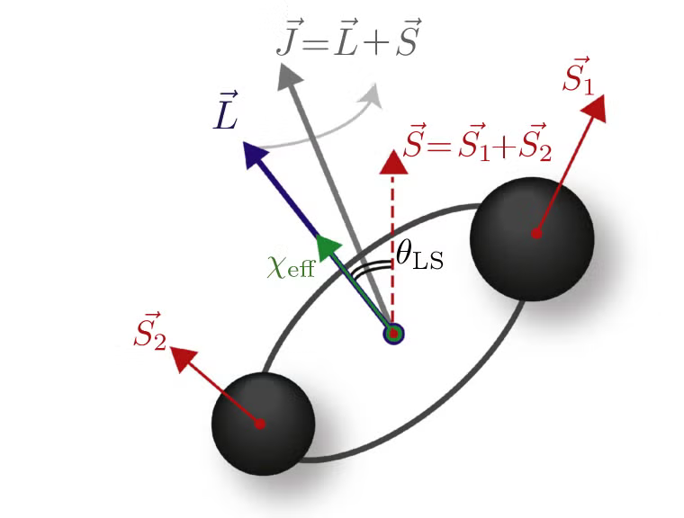

Precession in GWs

With binary black hole (BBH) mergers accounting for a large proportion of the gravitational wave (GW) events observed by the LIGO-Virgo-KAGRA collaboration, BBH dynamics have received a lot of attention in recent years. Spin precession is a key factor in such dynamics. Spins of the black holes in binary largely depend on different astrophysical formation channels that result in the formation of BBH systems. Dynamical environments, such as globular clusters, dense stellar regions, and active galactic nuclei, can lead to the formation of BBHs with spins misaligned with the orbital angular momentum.
Due to the misalignment of spins with respect to the orbital angular momentum, the orbit of the binary precesses and nutates around the total angular momentum. Such spin dynamics leave imprints on the emitted GWs, evident from modulations in the polarization, phase, and amplitude of the GW signals. Hence, GW signals can provide an insight into various astrophysical properties of the system they originate from via realizations for masses and spins of the compact objects, along with orbital properties, distance to the binary, sky location, etc.
My Research on precession in GWs
I am particularly interested in spin precession effects on GW signals from BBH mergers. I worked on building a (inspiral-only; post-Newtonian) waveform which captures geometrical nature of the precessional motion. This precession of the orbital angular momentum affects the GW signal on precessional timescales. My focus is to understand the distinguishability of precessing signals from non-precessing signals. We do this by employing match-filtering techniques, we calculate mismatches and set a distinguishability criterion and discuss where in the parameter space one might find a precessing signal. This work resulted in a forthcoming paper. I am currently working on understanding the implications of nutation of the orbit on the GW signals. For this, I am building a waveform that incorporates the nutational effects on the GW signals with precession.
Also, I created this app Generic Precession App to visualize the effects of precession on gravitational wave signals. This may respond slowly as it is hosted on a free server, but it is functional.
More to come. Thank you for your patience.